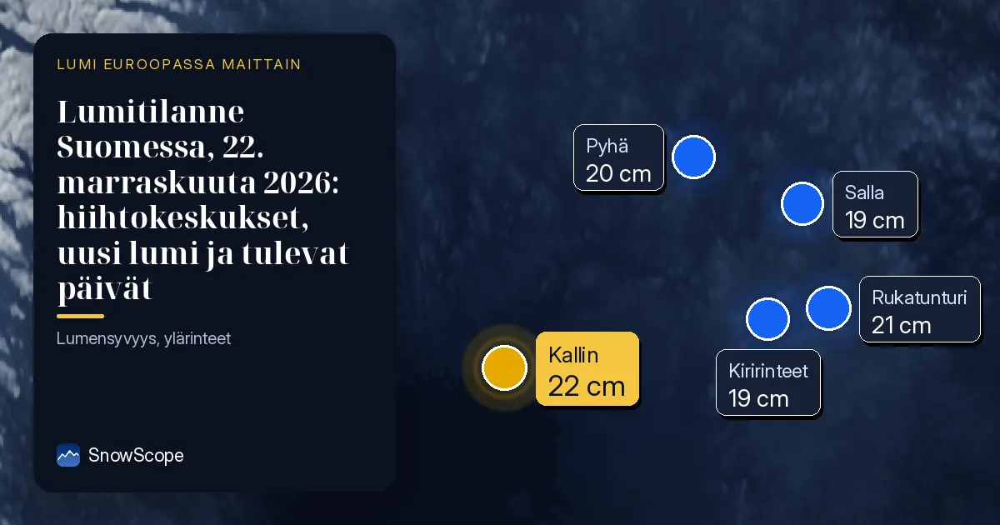

Lumitilanne Suomessa, 22. marraskuuta 2026: hiihtokeskukset, uusi lumi ja tulevat päivät
Kallin on tänään 11 cm:n syvyydessä, selvästi yli 6 cm:n, jonka näkisit tavallisena 22. marraskuuta. Hiihtokeskuksen huippulumikausi tulee maalis–huhtikuun vaihteella, jolloin syvyydet yleensä huipentuvat Suomen matalapainanteiden alueella.
Katso kohteen Kallin lumiennuste reaaliajassa SnowScope-sovelluksessaLumensyvyys, puuterihälytykset ja 3D-kartta, ilmaiseksi.
Miksi ajoitus on tärkeä matalamman korkeuden kohteille
Kallin ja muut suomalaiset hiihtokohteet alle 500 m:n korkeudella saavuttavat syvimmän lumen viikoilla 9–11 (maaliskuun kolme ensimmäistä viikkoa). Reissun ajoittaminen siihen antaa sinulle parhaat mahdollisuudet jatkuville rinteille ja kunnolliselle pohjalle suksiesi alle.
Marraskuun alun lumi on ohut ja katkonainen. Tänään 94 % Suomen korkeista alueista on valkoisia, mutta syvyys vaihtelee merkittävästi. Matalalla korkeudella (0–500 m) lunta on keskimäärin vain 7 cm. Yli 500 m:n korkeudella se kaksinkertaistuu 15 cm:ksi, ja yli 1 000 m:n korkeudella se nousee 42 cm:ksi. Tämä korkeuserotus selittää, miksi ylemmät rinnealueet ovat paremmin hiihtokelpoiset kuin laaksot juuri nyt.
| Resort | Today | Normal for the date | Share of normal |
|---|---|---|---|
| Kallin | 11 cm | 6 cm | 183 % |
| Rukatunturi | 21 cm | 20 cm | 105 % |
| Pyhä | 15 cm | 21 cm | 71 % |
| Kiririnteet | 18 cm | 21 cm | 86 % |
| Salla | 19 cm | 21 cm | 90 % |

Kallin:n etu tänä vuonna
Kallin:ssa on 11 cm mittauspisteessään 40 m:n korkeudella, mikä on 183 % normaalista marraskuun lopulle. Tämä kasvu tuli, kun 281 570 km² Suomesta muuttui valkeiksi viime viikolla—kasvu 111 890 km² siitä jälkeen, kun 16. marraskuuta. Viidestä suuresta kohteesta, joista on tietoja, vain 2 ylittää historiallisen keskiarvonsa tänään; Kallin on selvästi voittaja.
Sen ylemmät rinnealueet säilyttävät 22 cm, mikä on syvintä SnowScope-kartalla Suomesta. Rukatunturi (21 cm), Pyhä (20 cm), Kiririnteet ja Salla (molemmat 19 cm) seuraavat. Ylemmän ja mittauspisteen välinen ero heijastaa luonnollista rinnettä, joten ylemmät ajot ovat aina paksumpia kuin keskivuoren luvut antavat ymmärtää.

Mitä seuraava viikko tuo
Maanantai 23. marraskuuta on tulevaisuudessa lumeisin päivä, enintään 4 cm mahdollista parhailla rinteillä. Kolmen päivän ennuste lisää yhteensä enintään 5 cm, joten uusi lumi ei kasaudu nopeasti. Seitsemän päivän kokonaismäärä pysyy myös enintään 5 cm:ssä.
Kainuun kukkulat ovat keränneet eniten lunta kolmen päivän aikana, paikoin 18 cm. Suurin osa Suomesta on nyt hiljaisemmassa vaiheessa. Joulukuu (viikot 1–2) näyttää vain noin 3 cm koko viikon ajan, joten marraskuun lopulle tyypillinen talven hiljainen kausi asettuu paikoilleen.
Lumikartta korkeuksien mukaan
Maa alle 500 m: 7 cm keskimäärin, 94 % valkoinen. Monilla alemmilla rinteillä on vielä kallioita ja ohuita kohtia.
Maa 500–1 000 m: 15 cm keskimäärin, täysin valkoinen. Hiihtorinnat tässä korkeudessa toimivat, vaikka pohjasyvyys on vielä vaatimaton.
Maa yli 1 000 m: 42 cm keskimäärin, täysin valkoinen. Ylempi maasto tarjoaa luotettavimmat olosuhteet nyt.
Kuinka tämä viikko rakensi lumisuutta
Suomen valkoinen alue kasvoi päivä päivältä: 157 360 km² 16. marraskuuta, sitten nousi tasaisesti 232 900 km²:iin 21. marraskuuta ja saavutti 281 570 km² 22. marraskuuta. Suurin hyppy tapahtui viimeisellä päivällä—48 580 km² lisätty 24 tunnissa.
56 Suomen 67 kartoitetusta kohteesta säilyttää nyt lunta. Kallin johti suurimman osan viikosta, menettäen sitä lyhyesti Pyhälle 20.–21. marraskuuta ennen kuin valtasi huippupaikan takaisin 22. marraskuuta 22 cm:llä ylemmillä rinteillään.
Naapurien olosuhteet
Ruotsi on 96 % valkoinen ja Björkliden on 136 cm, syvintä kohdetta molemmissa rajoissa. Norja on 94 % valkoinen, ja Riksgränsen säilyttää 166 cm. Molemmat naapurit odottavat 6–15 cm seuraavalla viikolla, joten lumi kasvaa oikeastaan kaikkialla Skandinaviassa.
Vinkkejä laskijoille
- Varaa reissusi maalis–huhtikuun vaihteelle (viikot 9–11), jos haluat kohteessa Kallin ja muissa matalalla korkeudella sijaitsevissa kohteissa syvimmän ja luotettavimman lumen.
- Jos menet marraskuun loppuun, keskity yli 500 m:n korkeudella oleville rinteille, joissa pohja on paksumpi ja jatkuvampi.
- Kauden alun lumi peittää kallioita ja juuria: aloita valeillulla rinteillä löytääksesi parhaan peittävyyden ja vältääksesi vahinkoa suksillesi.
- Tuuli voi kovettaa ylemmät rinnealueet: tarkista olosuhteet päivästä ja lue hissiuutiset ennen kuin lähdet harjanteelle.
- Vahvista hiihtokeskuksen hissin kunto ennen kuin matkustat; lumensyvyys yksin ei tarkoita, että rinnealueet olisivat auki.
Näistä luvuista
Hiihtokeskusten lumensyvyydet ovat syvin lumi keskuksen ylärinteillä näytettynä päivänä; ne ovat arvioita alueelle, eivät mittaus yhdessä pisteessä. Ennusteet voivat muuttua. Lue aina virallinen lumivyöryennuste ennen rinteiden ulkopuolelle lähtöä.
Viittaa tähän raporttiin
Tutkimukseen, opetukseen tai mediaan: luvut ja kaaviot ovat vapaasti käytettävissä CC BY 4.0 -lisenssillä tällä lähdeviitteellä.
SnowScope (2026), Lumitilanne Suomessa, 22. marraskuuta 2026: hiihtokeskukset, uusi lumi ja tulevat päivät, https://snowscope.app/blog/fi/2026/11/finland-when-to-book-ski-trip-22-november-2026.html, luettu 2026-11-22
SnowScope (Atlas Labs). (2026, November 22). Lumitilanne Suomessa, 22. marraskuuta 2026: hiihtokeskukset, uusi lumi ja tulevat päivät. SnowScope snow reports. https://snowscope.app/blog/fi/2026/11/finland-when-to-book-ski-trip-22-november-2026.html
BibTeX
@misc{snowscope2026finlandwhentobookskitrip,
author = {{SnowScope (Atlas Labs)}},
title = {Lumitilanne Suomessa, 22. marraskuuta 2026: hiihtokeskukset, uusi lumi ja tulevat päivät},
year = {2026},
month = nov,
howpublished = {\url{https://snowscope.app/blog/fi/2026/11/finland-when-to-book-ski-trip-22-november-2026.html}},
note = {Published 2026-11-22 12:34 UTC; accessed 2026-11-22}
}· CC BY 4.0 · Menetelmät, data ja työkalut →
Kallin: lumi ja lämpötila korkeuden mukaan, tämä talvi ja viime talvi (työkalut) →
Seuraa: Kallin
Ilmainen: viesti, kun uutta lunta on tulossa, ja ennuste joka aamu.